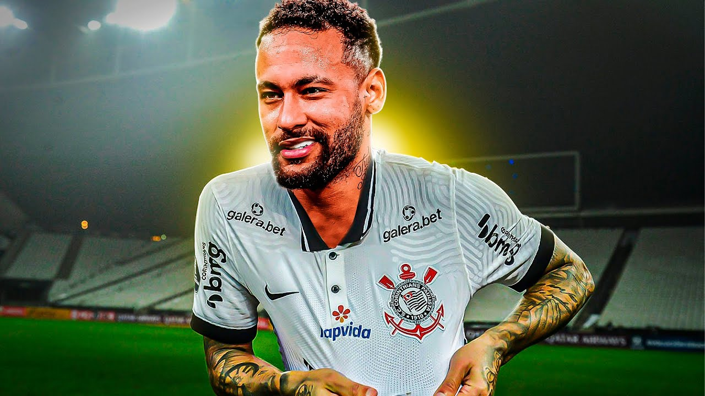
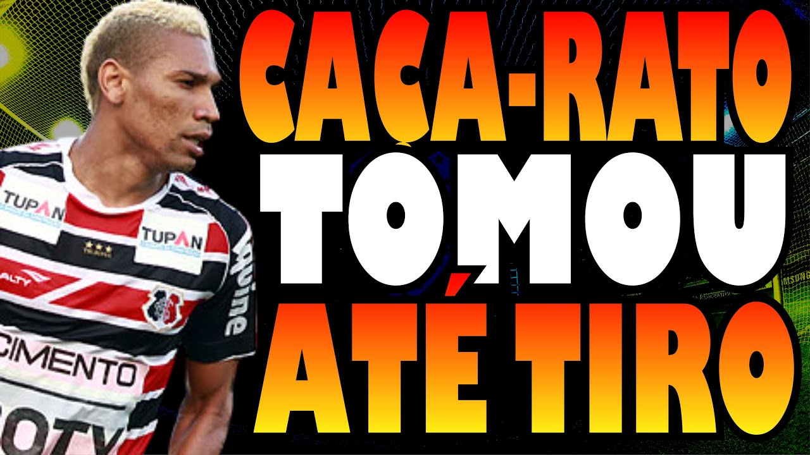
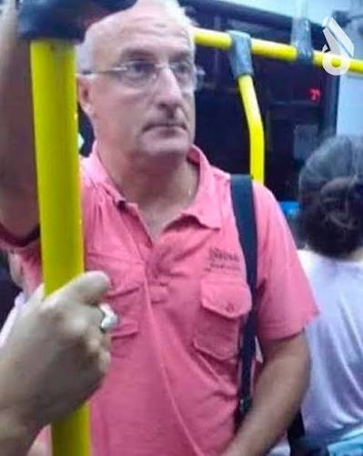
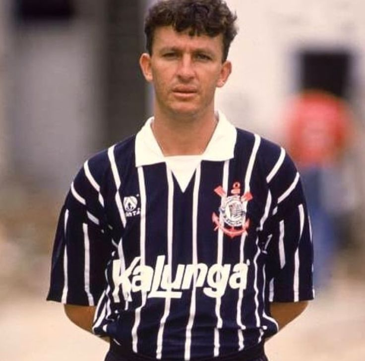
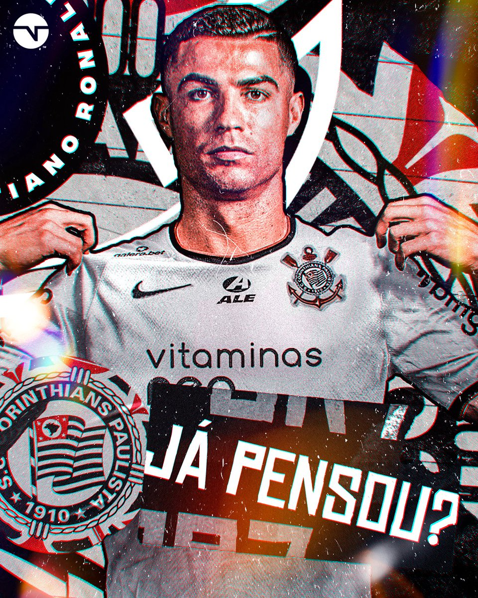
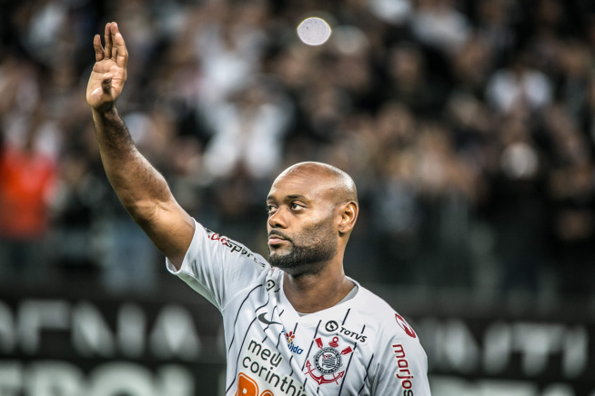
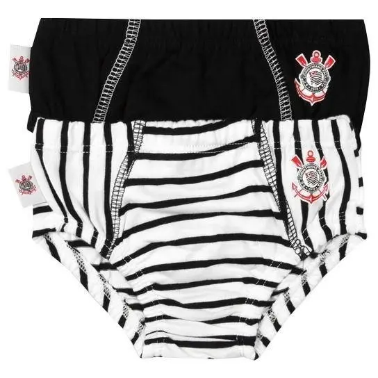
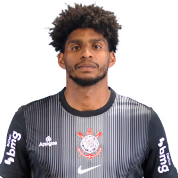

NEYMAR JR. REALIZA SUA ESTREIA NO TIME DO POVO
O Menino Da Vila fez sua estreia após ser afastado do Santos! Segundo ele: "Estava descontente com o time e sou Corinthians desde pequeno."

FLÁVIO CAÇA-RATO PROVOCA A GAVIÕES DA FIEL
Em entrevista, o jogador conhecido como caça-rato realizou provocações para a organizada do Sport Club Corinthians Paulista e foi ameaçado pelos torcedores.

DORIVAL REALIZA PROPOSTA OUSADA PARA 2026
O nosso genial técnico Dorival Júnior realizou a contratação de 6 volantes e 7 zagueiros para 2026. Diz ele: "Meu plano é retranca máxima contra o Varmengo e Varmeiras."

CRAQUE NETO DISCUTE SOBRE VOLTAR A JOGAR PELO CORINTHIANS
Na programação de Os Donos da Bola de terça-feira, o ex-jogador Craque Neto declarou que: "Se eu voltasse a jogar hoje com 59 anos eu ia acabar com esses oreiudo pé de rato!" enquanto gritava com Souza.

CRISTIANO RONALDO PUBLICA NAS REDES SEU APOIO AO CORINTHIANS
O vencedor de 5 bolas de ouro postou recentemente nas redes sociais seu imenso apoio e apreço pelo time do Corinthians. Ele comentou que um dia gostaria de jogar no timão.

GAVIÃO PASSA EM JOGO DO CORINTHIANS COM BANDEIRA AMARRADA
No jogo do Flamengo - 6 x 7 - Corinthians, a vitória do time do povo contra a urubuzada rendeu uma enorme festa no estádio. Imagens gravaram um gavião voando com a bandeira do Corinthians amarrada.

VAGNER LOVE RETORNA PARA O CORINTHIANS PARA A FELICIDADE DO POVO
O atacante Vagner Love oficializa nas redes a sua volta para o Corinthians. Boa parte dos comentários elogiaram a decisão e agradeceram por seu comprometimento com o time.

NOVO LANÇAMENTO DO KIT DE CUECAS DO CORINTHIANS EM PROMOÇÃO ABSURDA
O site oficial de vestimentas do Timão acabou de abrir uma promoção das roupas íntimas masculinas. A oferta se trata de 5 cuecas boxer pelo preço de 3, uma pechincha!
ESCALAÇÃO PRINCIPAL DO TIMÃO 2026
